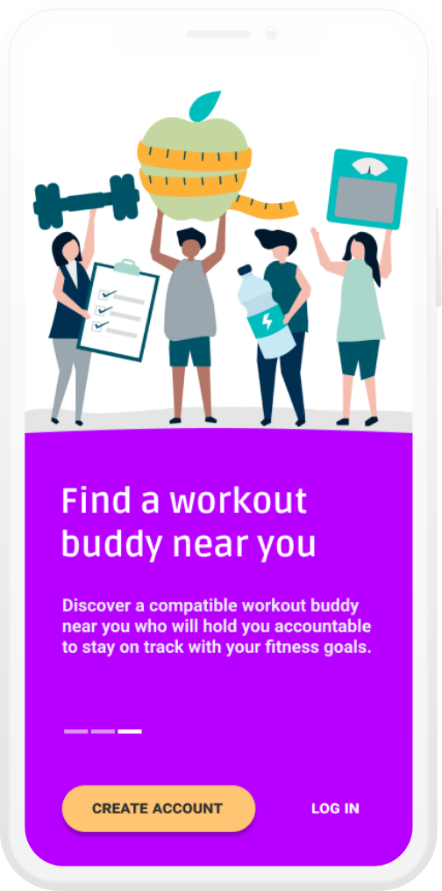
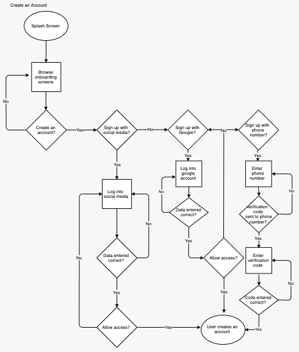
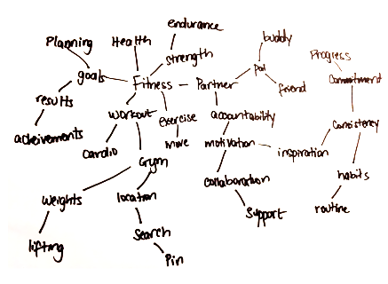
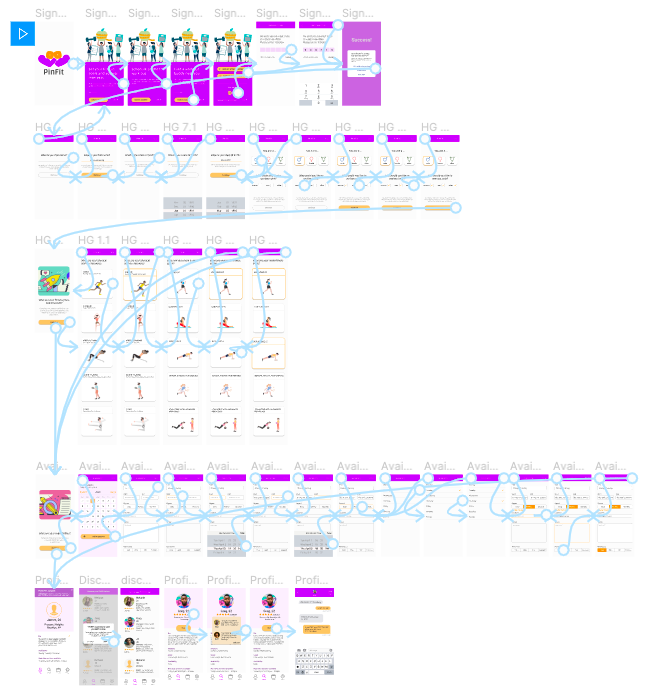
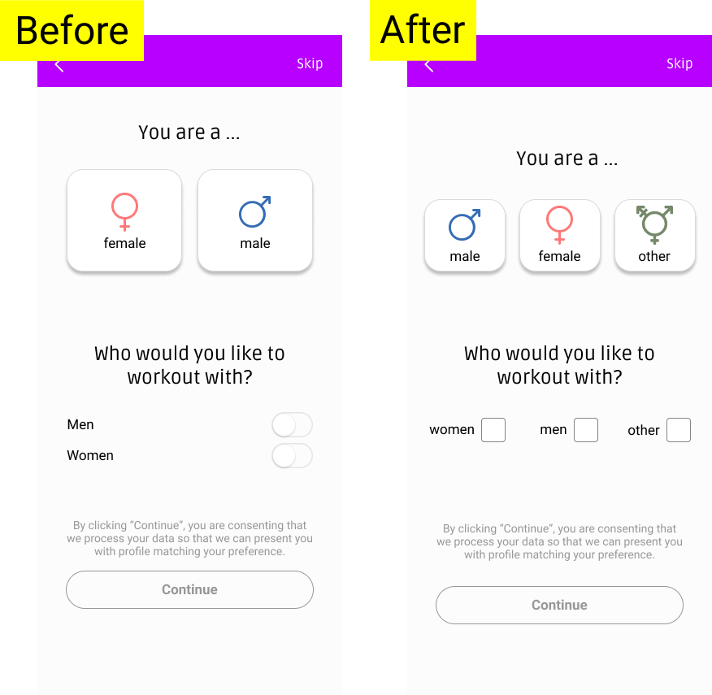
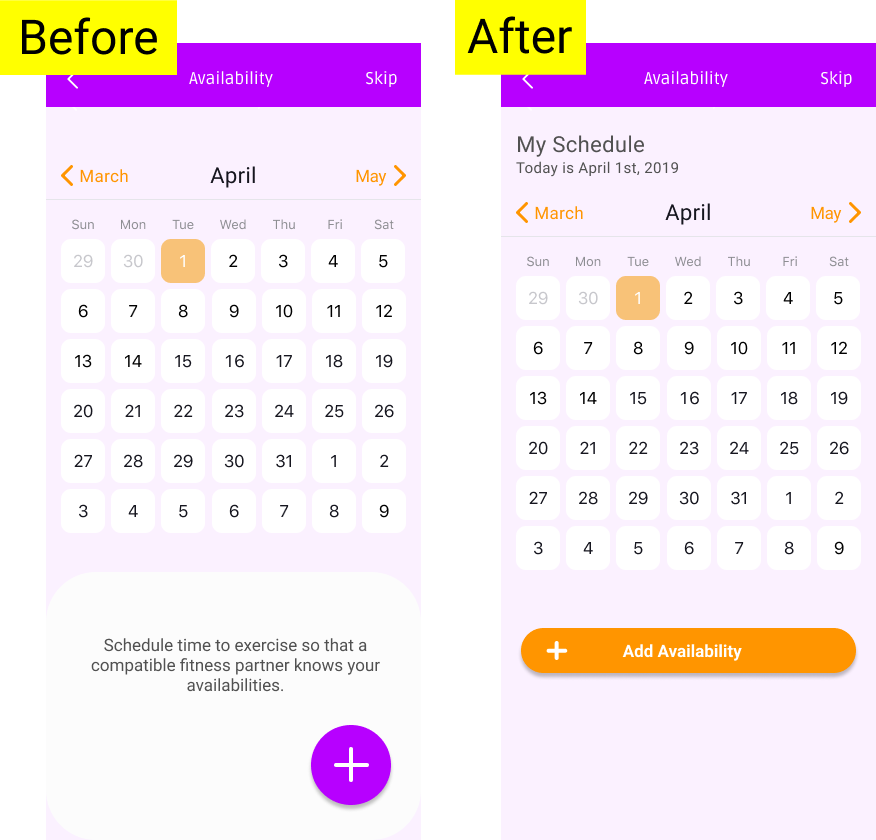
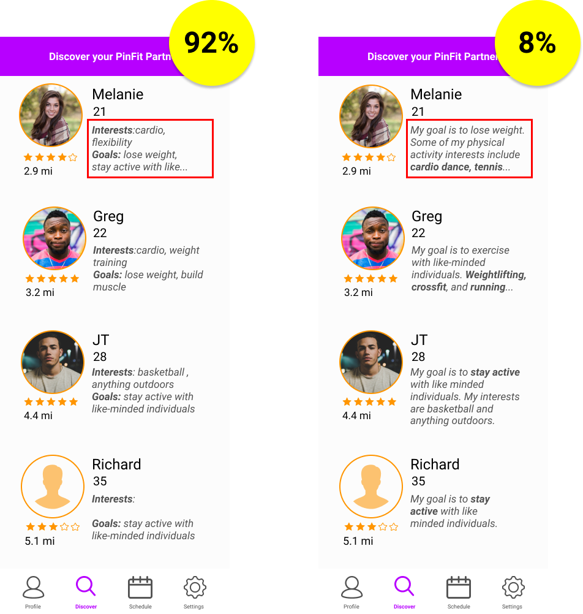

PinFit
OVERVIEW
PinFit is a location-based fitness application that allows users to connect for a team workout session. It aims to combine goal-setting with accountability partnership to promote active lifestyle among millennials. With sedentary lifestyle causing numerous health risks, finding the right workout buddy could be the answer to helping one get fit and stay active.

Duration
12 Weeks
- Research: 3 wks
- IA: 4 wks
- Visual Design: 5 wks

Design Roles
UX Research, User Stories, User Flows, Wireframing, Mindmapping, UI Design, Branding, Mockups, User Testing, Prototyping

Tools
Balsamiq, Figma, Adobe XD, Invision, Usability Hub, Maze
DISCOVERY
Problem
Millions of Americans set the goal of exercising to enhance their health every year. However, they don’t achieve them due to lack of motivation and accountability.
Solution
To help individuals stay committed to their fitness plans, I designed a mobile app that allows users to find compatible workout partners in their locations of choice based on their goals and physical activity interests.
RESEARCH
User Survey
I conducted two surveys to gauge whether people would be interested in social fitness and what features my target market would want in a new fitness app. The result was as follows:
90%
of individuals who like to exercise with others do so because they believe working out with others is motivating and enjoyable.
66%
of participants who rarely workout said that they have not stuck with a fitness routine due to lack of motivation
80%
of those who often exercise with other people mentioned that they do so with same people .
86%
like to have control over what time and schedule they workout.
Armed with this data, I looked for ways to best meet my users needs by creating an application with unique features in the saturated market of health and fitness apps.
View all user surveyCompetitive Analysis
Although there are countless workout trackers and health monitoring apps, there aren’t many geared towards helping partner individuals for a workout. Some of the few I found were as follows.
| Enjifit | PudgyBuddy | Fitocracy | |
|---|---|---|---|
| Social fitness | ✔ | ✔ | ✔ |
| Workout partner | ✔ | ✔ | ✗ |
| Location-based | ✔ | ✔ | ✗ |
| Games and competition | ✗ | ✗ | ✔ |
| Rating system | ✗ | ✗ | ✗ |
After conducting research I saw opportunities to stand out from the competition by incorporating some of the important features that these fitness apps were lacking such as a rating system one could utilize to determine a partner's personality and overall compatibility.
View SWOT analysisINFORMATION ARCHITECTURE
User Personas
- Name: Lillian Smith
- Age: 27
- Location: Baltimore, MD
- Occupation: Accountant
- Positive support and encouragement
- Staying committed to fitness plan
Goals
- Scheduling conflict
- Unhealthy competition
- Safety
Concerns
- Lillian wants to find an accountability partner to help her stick with a long-term fitness routine. She consistently exercises only when she has a special occasion she has like a vacation, or wedding she is a part of. However, she wants to workout regularly with a partner with similar goals and availability.
Motivation
- Name: Chris Carlos
- Age: 35
- Location: Newyork, NY
- Occupation: Web Designer
- Pushing one another
- Meeting new people
Goals
- Lack reliability
- Difficult personality
Concerns
Motivation
Chris is an open-minded fitness enthusiast who loves to meet people with similar activity interests. Although he mainly works out on his own, he believes exercising with others could give him the boost he needs to start a new workout challenge. Chris loves trying out new health and fitness products that could help him stay active.
User Stories
Next, I wrote a user story with target users in mind and prioritized them in order of importance.
| Role | Tasks | Importance |
|---|---|---|
| As a new user | I want to create an account | High |
| As a new user | I want to register my personal information | High |
| As a returning user | I want to log into my account | High |
| As a returning user | I want to set my fitness goals | High |
| As a returning user | I want to schedule a time to workout | Medium |
| All users | want to find a compatible workout partner | High |
| All users | want to rate their partner | Medium |
| All users | want to find local gyms in their area | Low |
User Flows
Next, I created flowcharts so that I could study each step a user would need to take in order to complete key tasks from signing up for an account to scheduling time to workout.
View all user flows
Sketches and wireframes
After completing the user flows, I sketched out my idea for solving the problem identified and tested the process of creating an account, registering personal information in relevance to the core functionalities of the app, and interacting with a potential workout partner.

Wireframes
Next, I wireframed my sketches for an initial usability test. My aim was to allow users to find a potential match without requiring users to fill out long registration forms but to instead have users provide just enough information that will allow PinFit to present to them potential workout partners. Although the functionality seemed self-explanatory to testers, some suggested I turn the typical form-like registration into a more engaging questionaire to keep users interested enough to accurately complete their information.
After hearing this feedback I decided to turn drop down menues into what what are supposed to represent illustrations planning to incorporate visuals for a more user-friendly user experience.
VISUAL DESIGN
Branding: Name, Logo, Style Guide
After refining my wireframes, I began to brainstorm ideas for a name and logomark for this app. After mind mapping and testing names, I came up with PinFit in association with the vision of this product which is to allow one to choose location (“pin”) and find a fitness (“fit”) partner.
For the logomark, I decided to design arms crossing with what’s supposed to symbolize weights at the center. I also chose the brand typeface, Ruda, to give the interface a strong yet warm and inviting feel.
In order to maintain consistency, I defined how the logo, color, typography and other assets are to be used in reference to this cloud storage service.
Color Palette
Logo
#BC13FE
#FF9500
Recommended Background
#FFFFFF
#DADADA
Call to Action Buttons
#FFC573
Typography
- Logo: Ruda
- Brand Typeface: Ruda
- Complimentary Typeface: Roboto
- H1 Main Heading: 30px
- H2 Subheading: 24px
- H3 Heading: 17px
- Paragraph Text: 17px
- Font Styles: Regular, Bold
Mockups and Prototypes
With a brand guideline and an updated wireframe, I crafted mockups in Figma. I then used these mockups to further validate my ideas and assumptions making sure all the pieces I had crafted translated into a coherent and meaningful prototype.
 View MockupsUsability Testing
I conducted both in-person and virtual tests to observe and analyze how my testers interacted with the prototypes. This uncovered several flaws that I would have missed had I not set out to validate my notions at this stage of the design process. For instance, I made the questionnaire more gender-inclusive by adding an “other” option and incorporated the most appropriate input control by using a checkbox instead of toggle switch.
Additionally, numerous testers clicked on the calendar multiple times before identifying the plus floating action button to add their availabilities. Realizing that the FAB was not serving its intented purpose, I decided to change it into a prominent button with text “+ availability” and placed it closer to the calendar. Surely, when I ran another test, 99% of testers accurately identified the new button. There was also positive feedback on the screen overall as the headings gave the calendar better context.
Preference Testing
Before wrapping up my mockup designs and rolling out my final prototype, I preference tested a few key areas of this product. The one area I tested that led to change was the 'Discover' screen.
92% percent mentioned they prefer seeing key words and phrases instead of paragraphs. Some stated they would go to their profile page for further details and thus “empty words” were unnecessary on this screen. Therefore, I replaced paragraphs with key words and phrases.
CONCLUSION
As rewarding as working on PinFit was, creating this niche product had its challenges. From conducting multiple surveys to figure out what target users want to implementing the right features for an MVP was not an easy feat. However, with frequent user testing throughout the design process, I was able to validate one idea after another until users could effortlessly complete tasks on the prototype. In addition, I was fighting the urge to design additional features like finding the closest gym, especially when testers had opinions about extra features I should include . Regardless, I stayed consistent with my user stories and personas to make sure scope creep did not occur. Overall, this project was a success as an app with a unique spin to motivating individuals stay active.